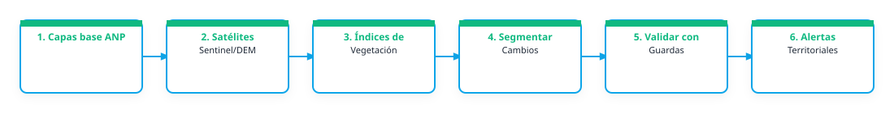

1. Problema que busca atender
Las Áreas Naturales Protegidas de México enfrentan procesos de transformación del paisaje derivados de cambios de uso de suelo, pérdida de cobertura forestal y fragmentación de hábitats, lo que puede comprometer la conectividad ecológica y la conservación de la biodiversidad. Aunque existe información ambiental disponible, no siempre se cuenta con herramientas que integren de manera sistemática el monitoreo de cobertura y uso de suelo y las tasas de transformación. Se requiere generar información espacial actualizada mediante Observación de la Tierra que permita identificar tendencias de cambio, evaluar el estado de conservación del territorio y apoyar la toma de decisiones para la gestión efectiva de las ANP.
2. Relevancia del problema
Este problema es relevante para la CONANP porque limita la capacidad de evaluar de manera oportuna los cambios en la cobertura forestal y el estado de conservación de las Áreas Naturales Protegidas. La falta de información actualizada dificulta la identificación de zonas prioritarias para conservación, restauración y manejo, así como la evaluación de procesos de fragmentación y pérdida de conectividad ecológica. Contar con información espacial confiable y periódica permitirá fortalecer la toma de decisiones, optimizar recursos y mejorar las estrategias de conservación en la Selva Maya.
3. Producto esperado
Tipo de entregable: Mapa; Capa geoespacial; Script; Flujo de trabajo; Reporte; Dashboard / tablero; Base de datos; Protocolo operativo
Descripción del producto: El producto esperado consiste en una herramienta de monitoreo que permita visualizar mapas de cobertura y uso de suelo, cambios multitemporales, tasas de transformación, cuerpos de agua y crecimiento urbano. Los usuarios podrán consultar indicadores espaciales, identificar áreas prioritarias para conservación o restauración, tendencias a lo largo del tiempo, descargar capas geográficas y utilizar la información para apoyar la gestión y el manejo de las Áreas Naturales Protegidas.
Componentes de despliegue sugeridos: Dashboard; API / servicio de datos
Nivel de acceso previsto: institucional
Forma de uso institucional: La solución sería utilizada a través de una plataforma web por personal técnico de la CONANP, Direcciones Regionales y equipos de las ANP para consultar mapas de cobertura y uso de suelo. Los resultados servirían para apoyar reuniones técnicas, procesos de planeación, monitoreo, conservación y restauración. La información podría descargarse para análisis complementarios, validarse mediante trabajo de campo y actualizarse periódicamente como parte de un sistema institucional de monitoreo satelital escalable a otras Áreas Naturales Protegidas del país
Requiere actualización: si
Frecuencia / Método de actualización: La solución está concebida desde sus inicios para operar bajo un esquema semiautomático de monitoreo satelital. Las clasificaciones de cobertura y uso de suelo, tasas de transformación y análisis asociados se actualizarían anualmente mediante el procesamiento de imágenes Sentinel-1 y Sentinel-2 en Google Earth Engine. En una etapa posterior, se prevé incorporar actualizaciones más frecuentes para ciertos indicadores y automatizar la publicación de resultados en la plataforma institucional. Además, se prevé integrar variables de calidad de Agua para las ANP Marinas.
4. Flujo de trabajo preliminar
El siguiente diagrama conceptualiza el procesamiento de datos y flujo técnico sugerido para la solución:

Descripción del flujo metodológico imaginado:
Selección y procesamiento de imágenes Sentinel-1 y Sentinel-2 en Google Earth Engine; generación de muestras de entrenamiento y validación; clasificación supervisada de cobertura y uso de suelo mediante Random Forest; evaluación de precisión y generación de mapas multitemporales; cálculo de matrices de transición y tasas de transformación; integración de resultados en una plataforma de visualización para consulta, análisis y apoyo a la toma de decisiones en las ANP.
Algoritmos o índices clave: Sentinel-1 y Sentinel-2; índices espectrales (NDVI, NDWI, SAVI); variables radar (VV, VH, VH/VV, RVI); texturas GLCM; clasificación supervisada mediante Random Forest; matrices de transición y tasas de transformación (FAO 1996). Las herramientas consideradas incluyen Google Earth Engine, QGIS, ArcGIS Pro, Python, PostgreSQL/PostGIS y ArcGIS Experience Builder para el procesamiento, almacenamiento y visualización de la información.
5. Datos e insumos identificados
Insumos satelitales y capas locales necesarias para el despliegue del prototipo:
| Insumo / Variable | Detalle en la Ficha |
|---|---|
| Datos Satelitales / Fuentes Copernicus | Sentinel-1 / radar SAR; Sentinel-2 / óptico; Copernicus DEM; Agua / humedad / humedales; Datos de campo; Límites locales / institucionales |
| Datos Locales Disponibles | Límites de las ANP de la Selva Maya, imágenes Sentinel-1 y Sentinel-2, puntos de entrenamiento y validación de cobertura y uso de suelo, mapas de cobertura existentes. |
| Datos Requeridos / Faltantes | Se requieren campos de entrenamiento para el modelo. |
| Documento Relacionado | SIMSAT resumen-19_2_58.pdf |
| Enlaces Externos / Observaciones | Enlace externo |